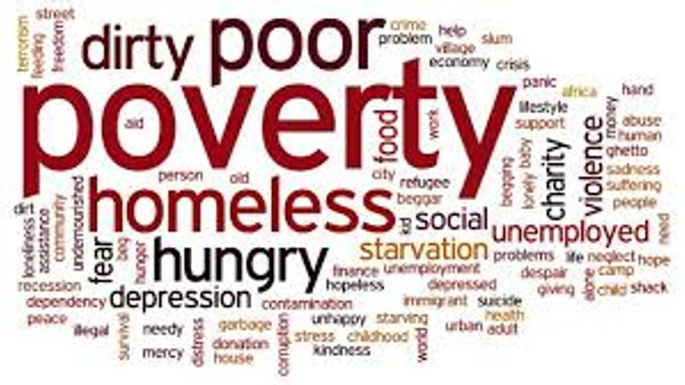
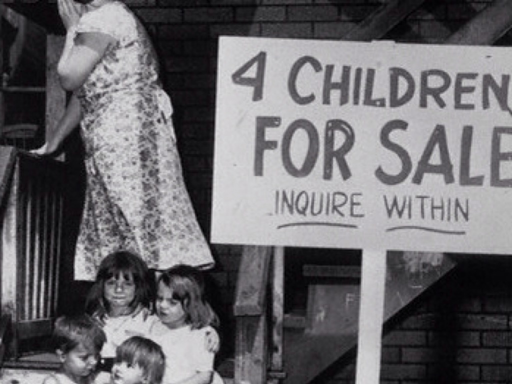
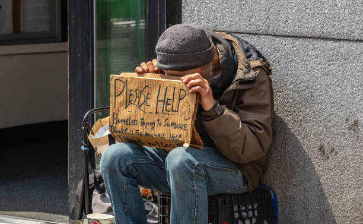

In the end of the 1930s banks began to fail, stores closed, and many became unemployed. 1.5 million people had been made unemployed. In 1931, many food riots and banks began to collapse. 4 million contructions jobs were created by Civil Works Administration in 1933. At this time unemployment rate is at 24.9% In 1934 the unemployed rate is now 21.7%, the economy increased by 10.8%. Inbetween the years of 1935-1950 the unemployment rate flucuated up and down.
What is Poverty?

Poverty is an unmet need and an unfulfilled longing. Poverty is lack of food, shelter, and everything good. Poverty is being sick and unable to see a doctor. Poverty is never having an opportunity to go to school. Poverty means not knowing how to read and write. Poverty is clothes that don't fit. Poverty is standing on the outside looking in. Poverty is dirty water you must drink.
Historical Changes in Poverty.

Poverty Today

Poverty today in America is still in underlying issue. Between 2000-2012, the percentage of people in poverty increased fron 12.2% to 15.9%. The number value is estimated at 33.3 million to 48.8 million people in poverty.In 2014,poverty decreased a little down to 14%.And from 2015-present we have reduced poverty from 13% to 11.6%